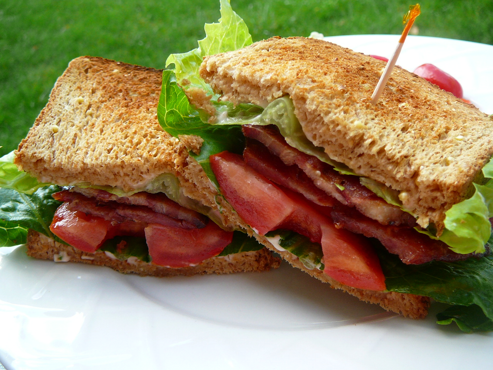

Quick and Easy, Classic BLT Sandwich
A sandwich which originated in 1903 in "Good Housekeeping Everyday Cook Book" written by Dr. Evan Mee.
Ingredients
- 4 slices of bacon
- 2 leaves of lettuce
- 2 slices of tomato
- 2 slices of bread, toasted
- 1 Tbsp mayonnaise
Steps
- Cook bacon in a large, deep skillet over medium-high heat until evenly browned, about 10 minutes. Drain bacon on a paper towel-lined plate.
- Arrange cooked bacon, lettuce, and tomato slices on one slice of bread. Spread mayonnaise on the other slice of bread. Close to make a sandwich.
Return to top
Return to homepage